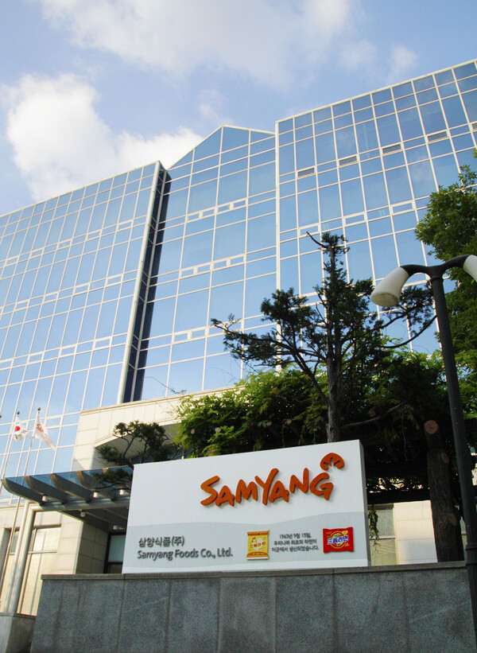
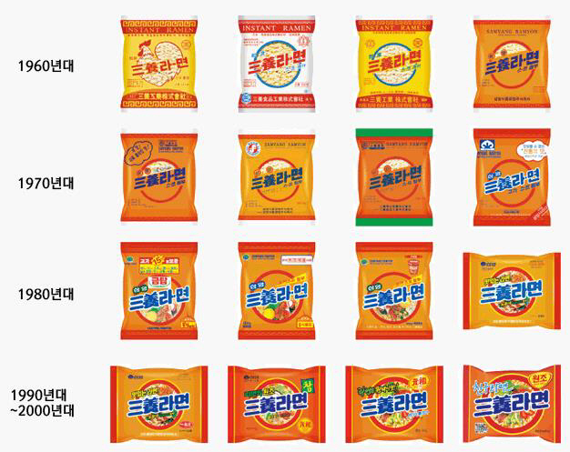
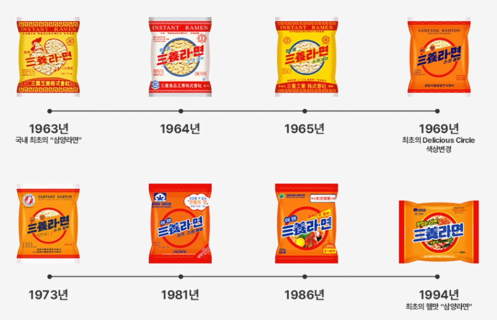
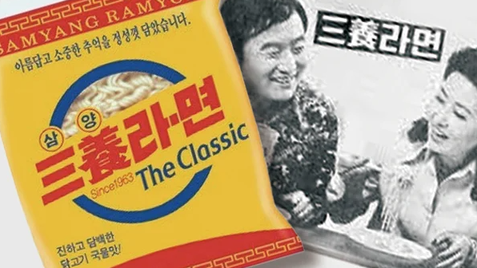
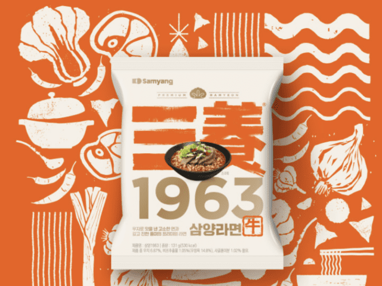
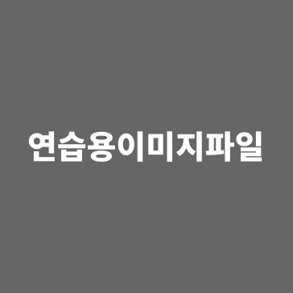
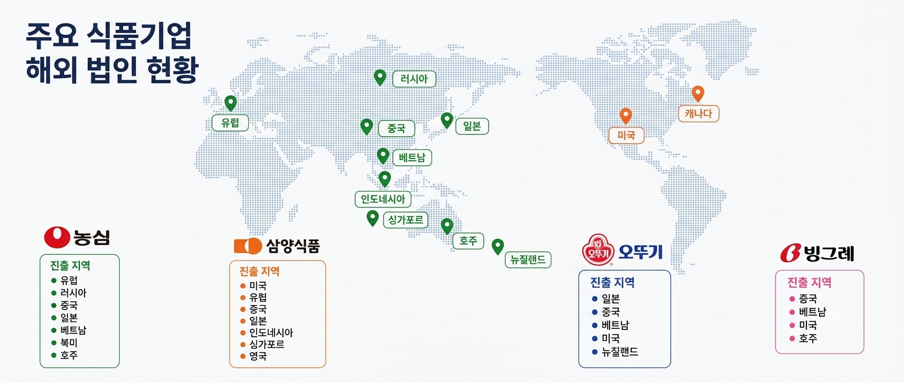

HOME > 삼양식품소개
1961년부터 이어온 맛의 기준, 삼양식품을 소개합니다.
삼양식품은 우리나라 라면의 역사를 시작한 기업입니다. 오랜 시간 쌓아온 기술과 고객의 신뢰를 바탕으로 더 맛있고 건강한 식문화를 만들어 갑니다.

연혁 내용을 입력하세요.





삼양식품의 제품은 전 세계 고객에게 전달되고 있습니다. 해외 법인과 수출 현황을 입력하세요.
